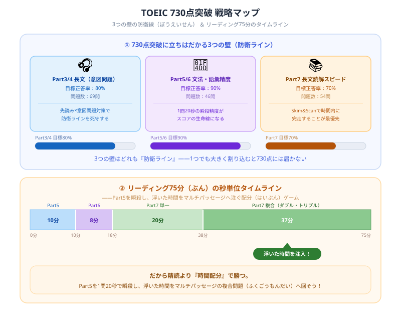

TOEIC 730点の勉強法・突破スケジュール【2026年版】
『就職・昇進・海外赴任の切符、TOEIC 730点をもぎ取るぞ！』と決意して模試を解いた瞬間……「うわっ、なんじゃこりゃ、Part7のトリプルパッセージで完全に時間切れになるし、Part3・4の意図問題が難しすぎて頭パンクするわ！」とフリーズしていませんか？（笑）
毎日会計士という重い数字や法律の猛勉強と格闘し、タイパを極め続けている僕の視点から、かけた時間と努力を最速でスコアに変えて回収できる【TOEIC730点最速独学逆算スケジュール】を優しくナビゲートします！最後まで読んだら、末尾の【いいねボタン】もポチッと押してもらえると嬉しいです。
TOEIC 730点とは？

TOEIC 730点は「英語が使える」とみなされる業界横断の基準ラインです。上位30%に位置するこのスコアには、リスニング・リーディングそれぞれに明確な壁があります。
- 就職・昇進・海外赴任の基準として最も広く使われるスコア
- 「英語が使える」とみなされる最低ラインとして業界横断で認知されている
- 受験者全体の上位約30%のスコア帯に位置する
- 大手企業の昇進・海外部門配属の要件としてよく設定される目標ライン
現在のスコア別・必要勉強時間
| 現在のスコア | 必要勉強時間 | 目安期間 |
|---|---|---|
| 500点以下 | 300〜400時間 | 6〜9ヶ月 |
| 500〜600点 | 150〜200時間 | 4〜6ヶ月 |
| 600〜650点 | 100〜150時間 | 3〜4ヶ月 |
| 650〜700点 | 50〜100時間 | 1〜3ヶ月 |
730点突破に必要な3つの壁
壁1：語彙（金フレ全800語の完全習得）
600点帯で通用する「金のフレーズ」前半の語彙だけでは730点には届きません。730点突破には金フレ全800語の完全習得に加え、「銀のフレーズ」レベルのビジネス語彙も必要です。特にビジネスメール・会議・説明文で頻出する語彙を強化することが得点アップの近道です。
壁2：Part 7 長文読解の時間切れ対策
730点帯の受験者が最もつまずくのが「時間切れ」です。ダブルパッセージ・トリプルパッセージは情報量が多く、読み方を変えないと時間が足りなくなります。設問タイプ（事実確認・推測・意図・NOT問題）をあらかじめ覚えておき、「どこを読むか」を瞬時に判断できるスキルが730点突破の鍵です。
壁3：Part 3・4のリスニング精度
730点にはPart 3・4の正答率80%以上が求められます。音声が流れる前に設問を先読みするスピードを上げる練習が必須です。また、730点帯から増える「意図問題」（話者がなぜそう言ったかを問う）に慣れることで、スコアが一段階引き上がります。
パート別目標スコアと攻略
| パート | 問題数 | 730点帯の目標正答率 | 攻略ポイント |
|---|---|---|---|
| Part 1 | 6問 | 100% | 全問正解必須。写真描写は消去法で確実に |
| Part 2 | 25問 | 85%以上 | 間接応答・話題転換に慣れる |
| Part 3 | 39問 | 80%以上 | 先読み＋意図問題（話者の意図）対策 |
| Part 4 | 30問 | 80%以上 | 先読み＋グラフ・表との照合問題対策 |
| Part 5 | 30問 | 90%以上 | 文法を完璧に。語彙問題も落とさない |
| Part 6 | 16問 | 85%以上 | 文脈の流れを掴んで空欄補充 |
| Part 7 | 54問 | 70%以上 | 時間管理が最重要。設問タイプ別の読み方を習得 |
730点突破の6ヶ月学習スケジュール
| 時期 | 学習内容 |
|---|---|
| 1〜2ヶ月目 | 金フレ全800語1周・公式問題集1〜2回分で現状把握と弱点特定 |
| 3〜4ヶ月目 | Part 5文法強化（1駅1題など）・Part 3・4の先読み練習を毎日実施 |
| 5ヶ月目 | 公式問題集5〜6回分・Part 7の時間計測練習（シングル10分以内） |
| 6ヶ月目 | 模試形式で毎週1回・スコアシートを分析し弱点を徹底補強 |
730点帯の推薦教材
- 単語：「金のフレーズ」で800語を完璧にしてから「銀のフレーズ」へステップアップ
- 文法：「TOEIC L&R TEST 一駅一題 NEW STUDY」でPart 5を毎日1問ずつ積み上げ
- 問題集：公式問題集（最新3冊）が最優先。本番と同じ質・難易度の問題で練習する
730点から次のステップ
730点を取得したら、次の目標は860点です。860点はTOEIC高得点者として広く評価される分水嶺であり、外資系・グローバル企業での英語業務に自信を持って臨めるレベルです。730点取得後も毎日30分の学習継続が860点への最短ルートになります。
⚔ TOEIC 730点への学習時間を積み上げよう
スタディクエストなら毎日の学習時間が経験値に変わります。
TOEIC受験生のライバルと競いながら730点突破まで継続できます。完全無料。
まとめ
- TOEIC 730点は就職・昇進・海外赴任の評価基準として最も広く使われるターゲットスコアである
- 現在600〜650点なら3〜4ヶ月、500点台なら4〜6ヶ月が目安期間
- 金フレ全800語の完全習得とPart 7の時間管理が730点突破の最重要課題
- Part 3・4は先読みと意図問題への慣れで正答率80%以上を狙う
- 公式問題集を軸に「解いた後の復習」に倍の時間をかけるのが730点突破の鉄則
もしこの記事が少しでも力になったら、僕の執筆モチベーション維持のために、ぜひ下の【いいねボタン】をポチッと押していってくださいね。いつも本当にありがとうございます！